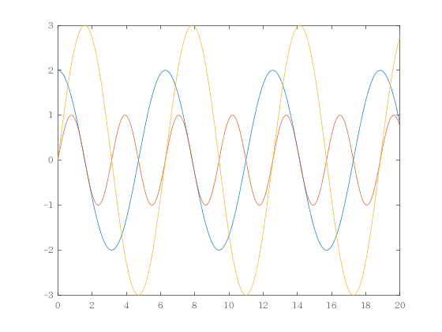

本地安装#
如果不想远程，想要本地就能编译，可以参考本文档。
安装说明#
安装Jupyter Book#
可以通过以下方式安装Jupyter Book：
$ pip install -U jupyter-book
或者通过Anaconda，Windows下通过Anaconda navigator中的Powershell Prompt进入bash界面：
$ conda install -c conda-forge jupyter-book
安装Matlab kernel#
版本对应#
首先要明确MATLAB和Python版本对应的关系，可以通过该网址查看。安装好对应版本的软件。
提示
推荐不更改MATLAB而是创建个新的conda环境来搞对应版本的Python，例如安装MATLAB 2022a，就可以安装支持的3.9版本的Python虚拟环境
$ conda create -n python39 python=3.9
$ conda env list # 查询已有的环境列表
$ conda activate python39 # 激活上述安装的新python环境
安装过程#
安装MATLAB Engine API for Python#
在Windows系统上，找到MATLAB安装路径下面的matlabroot\extern\engines\python目录，如该目录位置为D:\Matlab\extern\engines\python，则运行:
$ cd D:\Matlab\extern\engines\python
$ python setup.py install
或者在MATLAB命令行中使用:
>> cd (fullfile(matlabroot,'extern','engines','python'))
>> system('python setup.py install')
安装jupyterlab和MATLAB内核#
$ pip install jupyterlab
$ pip install matlab_kernel
$ python -m matlab_kernel install
要想移除该kernel可以使用：
$ jupyter kernelspec remove matlab
成功结果#
安装成功后即可在Jupyter notebook中选择到Matlab内核，后续就可执行相应MATLAB代码块。
clear,clc
x = linspace(0,20,1000); % linspace(a,b,k)表示在区间[a,b]中任取k个点
y1 = 2*cos(x);
y2 = sin(2*x);
y3 = 3*sin(x);
figure(1); % 其实可以不写，代表图画框1，但是通常为了标记图像，我一般都会这样写
plot(x,y1);
hold on % 只需要一个hold on就可以了
plot(x,y2);
plot(x,y3);
